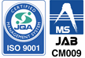

- HOME
- 品質保証
長年にわたり培ってきた射出成形技術と金型技術、そして挑戦を続けることで獲得してきた最先端のものづくり技術。それらを融合し、個性的で新しいプラスチック製品・部品を世に送り出している三光化成。こちらでは、当社が品質の安定・均一化を実現できている理由の一つ、品質保証システムについて詳しくご紹介します。
品質方針
目的
お客様が満足する品質及び技術を提供し、社会に貢献する。
目標
社員一人ひとりが顧客満足を意識し行動することで、お客様の信頼を勝ち取る。
求める品質を実現するために、品質マネジメントシステムを確立し継続的に改善する。
システムの運用が効果的に図られているか、成果の達成度を定期的に評価する。
行動指針
信義信頼のもと、三現主義で活動し、
始めから正しい仕事をしよう！！
決めたことは必ず守ろう！！
※この品質方針は、当社ホームページへ掲載し社外に公表します。
2017年9月1日 改定
代表取締役社長
細川 貴志
ISO9001認証取得内容
| 三光化成株式会社 本社・国内事業部 | |
|---|---|
|  | |
| 登録証番号 | JQA－QMA13132 |
| 登録日 | 2007年2月16日 |
| 認証機関 | 財団法人日本品質保証機構 |
| 登録範囲 | プラスチックの射出成形品の製造 （受注製品の金型設計、製作、及び成形、組立、加工、且つ製造委託の管理） |
| 三光化成株式会社本社 | 東京都板橋区成増1-28-3 |
| 三光化成株式会社 朝霞工場 | 埼玉県新座市野火止8-11-6 |
| 三光化成株式会社 福島工場 | 福島県二本松市舟形石山3番地 |
| 三光化成株式会社 多治見工場 | 岐阜県多治見市東町3-1-16 |
| 三光化成株式会社 広島工場 | 広島県三原市沼田西町惣定247番地95 |
| 三光化成株式会社 一関工場 | 岩手県一関市赤荻字鬼吉13-2 |
| 三光化成株式会社 一関第二工場 | 岩手県一関市赤荻字清水139-1 |
| 三光化成株式会社 宮城工場 | 宮城県登米市東和町米川字中島215 |
| 三光化成株式会社 弘前工場 | 青森県弘前市大字藤野2-9-5 |
| 三光化成株式会社 金型工場 | 岩手県一関市真柴字小西43-2 |
| 三光化成株式会社 花泉分工場 | 岩手県一関市花泉町涌津字下三ノ町2 |
| SANKO MEXICO，S.A. ｄｅ C.V.（メキシコ） | |
|---|---|
| ISO-9001:2000 | |
| 認証番号 | 951 07 4220 |
| 取得日 | 2007.March.05 |
| 認証機関 | TUV SUD AMERICA INC |
| 認証内容 | 自動車産業のためのプラスチックパーツの射出成形に関する品質管理システム |
| 三光化成塑膠（蘇州）有限公司（中国） | |
|---|---|
| ISO-9001:2000 | |
| 認証番号 | CN01/53491 |
| 取得期間 | 2004.11～2007.11 |
| 認証機関 | SGS |
| 認証内容 | プラスチック製品の製造（塗装、印刷を含む）、ロータリートランス、コネクター、カセット、タッチパネルの組立とFPCの後加工 |
| 三光化成塑膠（大連）有限公司（中国） | |
|---|---|
| ISO-9001 | |
| 認証番号 | 01004Q10382ROM |
| 取得日 | 2005.9.7 |
| 認証機関 | 東北認証有限公司 |
| 認証内容 | 事務機器、音響、映像機器、車載用プラスチック射出成形品の製造 |